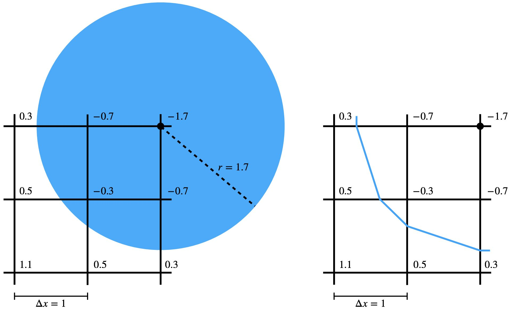

有符号距离
增量势能接触（Incremental Potential Contact，IPC）方法旨在通过在运动全程中保持固体边界之间的无符号距离大于零，来确保任意余维数的固体都不发生相互穿透。该方法的鲁棒性在于其普遍适用，与固体的具体特征无关。
然而，当能够获取有符号距离时，增量势能接触（IPC）的应用不仅直接，而且更加简洁。有符号距离把无符号距离的概念推广到具有闭合边界的固体几何。由于增量势能接触（IPC）强制满足非穿透，固体内部出现负距离的可能性被排除。因此，在有符号距离保持非负（包括恰好为零的状态）的场景中，就表明非穿透得到了成功保证。
定义 7.1.1 (余维数). 若 \(W\) 是有限维向量空间 \(V\) 的线性子空间，则 \(W\) 在 \(V\) 中的余维数是二者维数之差： 例如在三维空间中，曲面的余维数为 \(1\)，直线的余维数为 \(2\)。 在计算机图形学中，仿真布料与毛发时，为提升效率通常分别采用余维数为 1 和 2 的几何表示。然而，这类表示的有符号距离并没有良好定义。这也解释了为何无符号距离在固体接触建模中更具一般性。
在之前的小节中，我们探讨了表示固体几何的各种方法。其中一种值得注意的方法是解析表示。例如，以 \( \mathbf{c} \) 为球心、半径为 \( r \) 的三维球体可用如下参数化形式解析地描述：
这种定义固体几何的思路并不局限于简单的球体。许多其他形状，如半空间、长方体、椭球体和圆环面，都可以类似地参数化。这些参数化的关键在于定义这些对象的“内部”，而这往往可以通过有符号距离一类的函数来实现。这类函数提供了一种通用的工具，能够以简洁而数学化的方式描述从简单到复杂的各种形状。
示例 7.1.1 (球体的有符号距离函数). 以 \(\mathbf{c}\) 为球心、半径为 \(r\) 的球体的有符号距离函数 \(d(\mathbf{x})\) 及其导数可定义为
示例 7.1.2 (半空间的有符号距离函数). 法向为 \(\mathbf{n}\) 且满足 \(d(\mathbf{o}) = 0\) 的半空间，其有符号距离函数 \(d(\mathbf{x})\) 及其导数可定义为
现实生活中常见的更复杂几何形状往往因其复杂性而难以表示。除复杂的参数化之外，一种有效的替代方案是使用均匀欧氏网格。该网格用于存储固体对象的有符号距离，这些距离在每个网格节点处预先计算。当需要固体内部任意点处的距离时，可对网格数据做插值。
示例 7.1.3 (网格有符号距离场). 对于存储在间距为 \(\Delta x\) 的均匀欧氏网格上的有符号距离场，若要在任意位置 \(\mathbf{x} = (x,y)\) 处查询距离，其中 \(x = x_i + \alpha \Delta x\)、\(y = y_i + \beta \Delta x\)（\(\mathbf{x}_{i,j} = (x_i, y_j)\) 为网格节点的位置，\(0 \leq \alpha,\beta \leq 1\)），则采用双线性插值（图 7.1.1 右图）可得 从 图 7.1.1 中我们还可以看到，要在此设定下光滑地近似固体边界，需要采用更高阶的插值格式，例如二次 B 样条插值。

图 7.1.1. 网格节点到球体边界的有符号距离经过预计算并被存储（左图）。采用双线性插值后，球体边界的一部分被近似为蓝色折线（右图）。